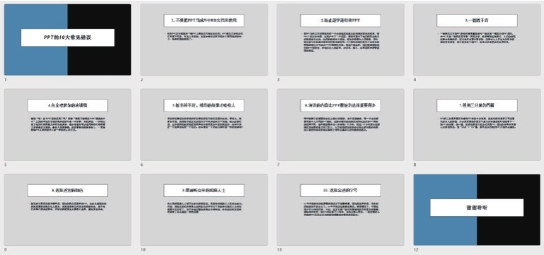
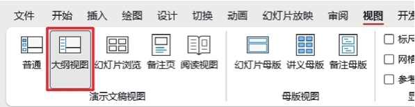
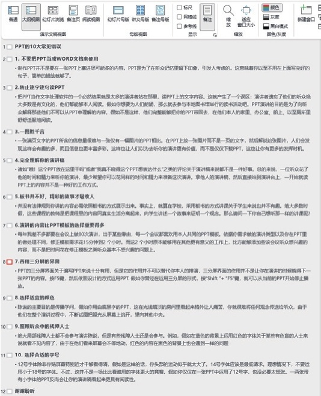
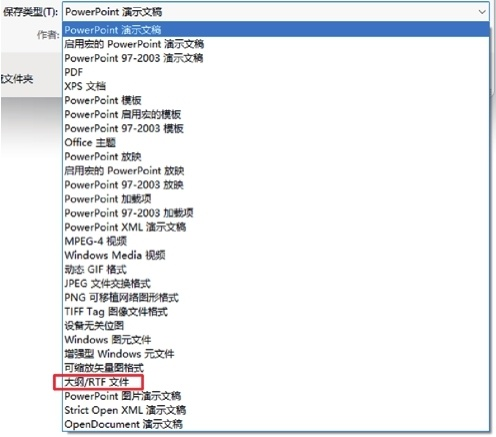
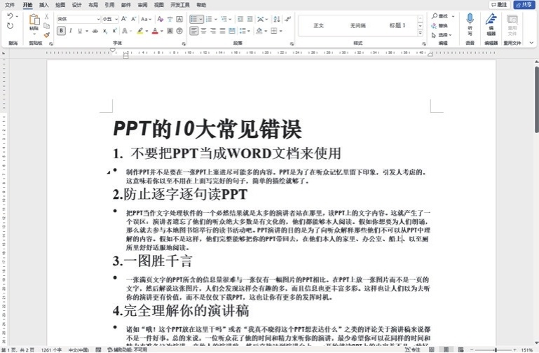

首页 > 编程笔记
将PPT转换成Word（4个步骤）
你想把下图所示的这份多张幻灯片的 PPT 转换成 Word 文件，就拼命地复制粘贴。其实，这样做不仅浪费了大量时间，还容易出错。
想自动把 PPT 转换成 Word 文件，按照下面的方法进行操作非常方便。

想自动把 PPT 转换成 Word 文件，按照下面的方法进行操作非常方便。
第1步
检查幻灯片中的文字内容是否在大纲视图中，方法是：在“视图”选项卡中单击“大纲视图”按钮。

第2步
如果出现下图所示的效果，说明你之前的文字输入是在默认文本框中进行的，可以进行转换操作。

第3步
按F12键，弹出“另存为”对话框，将“保存类型”设置为“大纲/RTF文件”。

第4步
直接用 Word 打开此 RTF 文件，并保存为 doc 格式，即可得到 Word 文件。

关注公众号「站长严长生」，在手机上阅读所有教程，随时随地都能学习。内含一款搜索神器，免费下载全网书籍和视频。

微信扫码关注公众号